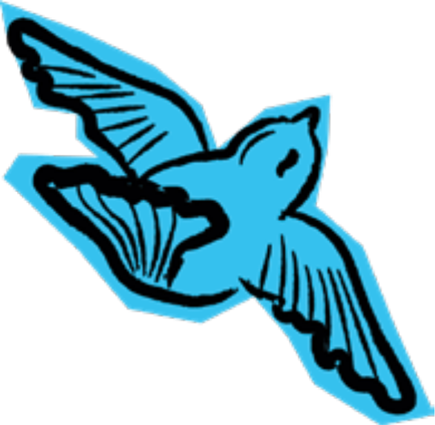

Crianças e adolescentes até 17 anos
Conselho Tutelar
Guarapuava contra a violência sexual

O primeiro passo para se libertar é falar. E você não precisa dar esse passo sozinho.
Aqui você encontra o caminho do atendimento e os canais de apoio para quem passou por qualquer tipo de violência sexual — em qualquer idade, sem julgamento.
Sem medo, sem vergonha, sem culpa
NENHUM MEDO, VERGONHA OU CULPA
é maior que você.
Existe escuta, suporte e acolhimento para quem passou por qualquer tipo de violência sexual — em qualquer idade e gênero, e mesmo depois das primeiras 72 horas. Denunciar não é uma obrigação: é um caminho de acolhimento, e você não precisa caminhar sozinho.

O caminho de atendimento
O passo mais importante é o primeiro — e você não dá ele sozinho. O caminho muda um pouco conforme quando aconteceu; toque abaixo para ver por onde começar. O resto, a gente cuida com você.
Ponto de partida: pessoa em situação de violência sexual → acolhimento e escuta ativa.
Se aconteceu nas últimas 72 horas, vá ao Hospital São Vicente ou ao Hospital Santa Tereza assim que puder. É porta aberta: você é atendido na hora, sem agendamento e sem custo. Quanto antes você chegar, mais a gente consegue cuidar de você.
Você vai ser recebido com cuidado, respeito e sigilo. Não precisa levar provas, não precisa estar pronto, nem ter as palavras certas — basta chegar. A partir daí, você não fica sozinho: tem gente pronta para te ouvir e ficar ao seu lado em cada passo.
Quer conversar com alguém antes? Veja onde buscar ajuda.
Mesmo que as primeiras 72 horas já tenham passado, busque a Unidade Básica de Saúde (UBS) de referência mais próxima. Nunca é tarde para pedir ajuda — o cuidado continua aqui para você.
Você vai ser recebido com carinho e sem nenhum julgamento. Não existe tempo certo nem jeito certo de pedir ajuda — o que importa é que você chegou. E daqui pra frente, você não caminha sozinho: tem gente pronta para te escutar e seguir junto, no seu ritmo.
Quer conversar com alguém antes? Veja onde buscar ajuda.
Pedir ajuda já é um ato de coragem — e você não precisa fazer isso sozinho. Tem muita gente pronta para te amparar desde o primeiro contato. Se quiser começar agora, ligue para o Disque 100: é de graça, sigiloso e funciona a qualquer hora.
Onde buscar ajuda
ENCONTRE SUPORTE
Canal principal · a ponte para a rede
Disque 100
Uma ligação gratuita e sigilosa, a qualquer hora do dia ou da noite. Você pode ligar só para conversar, tirar uma dúvida ou pedir ajuda — sem precisar explicar tudo. Do outro lado, sempre tem alguém pronto para te ouvir e ficar do seu lado.
Conselho Tutelar
CRAM — Centro de Referência de Atendimento à Mulher
CREAS — Centro de Referência Especializado de Assistência Social
Acionamento imediato e responsabilização
Secretaria de Assistência e Desenvolvimento Social
Central de Atendimento à Mulher — gratuito e anônimo
Basta falar.
Você não precisa de provas nem de certezas para pedir ajuda.